The Tiger Capital of India
Nagpur
a.k.a The city of oranges
Food In Nagpur
1. Tarri Poha
Poha is a popular dish in Maharashtra. In Nagpur, poha is called by a different name, they call it Tarri Poha.
Prepared using rice flakes, onions, tomatoes and served with Tarri (a thick gravy), this dish is delicious and healthy.
- Where to eat: Street food stalls throughout Nagpur
2. Param Ki Daal
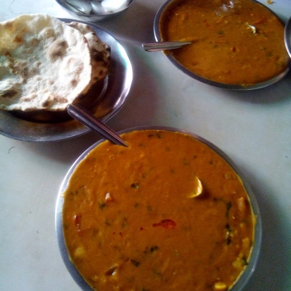
If there is one dish that you have to try in Nagpur, it is Param Ki Daal. Param has been dishing out a special kind of dal, that has come to be loved by locals since about 50 years ago.
What is different about this dal is that, instead of being cooked on a gas stove, it is cooked charcoal, giving it a smoky aroma and taste.
- Where to eat: Param Da Dhaba in Lakadganj
3. Saoji
Spicy and hot, this dish is a must-try for every non-vegetarian visiting Nagpur. Native to the land, this dish is prepared using trotters and spicy masala.
Some restaurants serve Saoji with chicken and vegetables, so if you don’t like trotters, you can choose either of them.
Saoji is a signature cuisine of Nagpur, so you have to try a dish made in Saoji cuisine when visiting.
- Where to eat: Any local Bhojnalaya, Saoji Plaza in Sitabuldi, Saoji Jagdish Bhojnalaya in Gandhibagh
4. Patodi
A Maharashtrian delicacy, Patodi is made with besan and is high on protein. In Nagpur, they make patodi in red, spicy curry.
Best served with roti, this dish is popular at Maharashtrian restaurants in the city of Nagpur. Be warned, this dish spicy and hot.
- Where to eat: Rasoi Ghar Restaurant in Civil Lines, Orchid Restaurant in Hingna
Back to top
Speritual Places in Nagpur
1. Shree Ganesh Mandir Tekdi
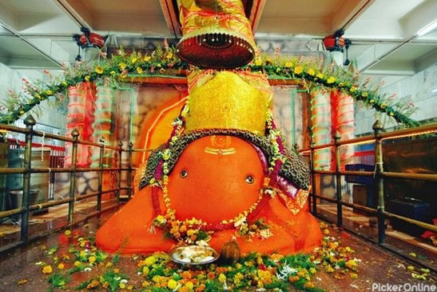
The Shree Ganesh Mandir in Nagpur is very popular among believers of Lord Ganesh. That’s why you’ll especially find a large chunk of devotees visiting this place during the time of Ganesh Utsav. And this temple especially got its name “Tekdi” because you’ll have to leave your car on rent way behind before climbing towards this temple that is located on a (Tekdi) hillside.
2. Deekshabhoomi
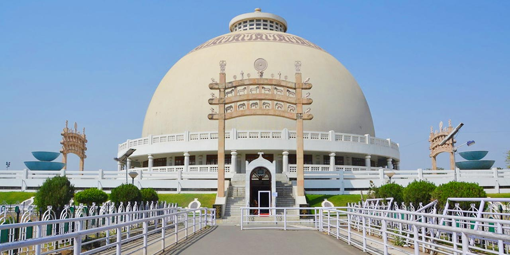
Deekshabhoomi is one of the famous tourist attractions and Buddhist Temple in Nagpur. It’s also considered an important pilgrimage centre for the Buddhists and you’ll see a rush of them during the Dharma Chakra Pravartana Day in this temple. If you want, you can visit this temple during that date (14th October) or whenever you want to feel a sense of serenity in this zen like place.
3. Swaminarayan Temple
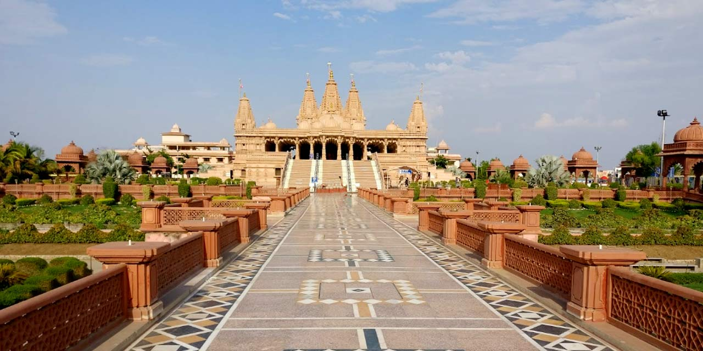
The Swaminarayan Temple of Nagpur is especially known as one of the oldest and primitive temples of the city. But apart from this, even its architecture and heritage attract lots of devotees towards it. You can visit this temple to marvel at its exclusive structure while praying for your spiritual betterment.
4. Poddareshwar Ram Mandir
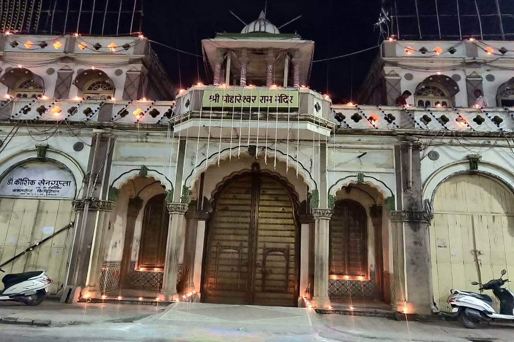
When we are talking about the important religious places of Nagpur, how can we forget the Poddareshwar Ram Mandir in this city? It’s a very profound temple especially tagged as the pride of Nagpur and was built back in the year 1923. Just take a self-drive car rental in Nagpur to reach it because it’s said that whoever visits this temple, definitely finds inner peace and spiritual enlightenment.
5. Adasa Ganpati Temple
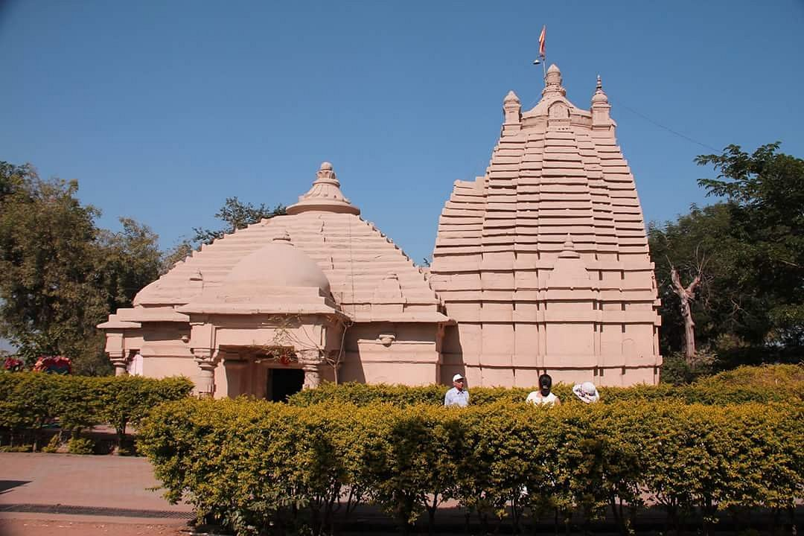
When you travel for around 45 kilometres from Nagpur, you’ll reach a small village called Adasa. The temple complex in this location is very much talked about because — firstly, it’s a pre-historic temple of around 4000 years old standing at this place; secondly, you’ll find it located on a hillock in this village and people love to climb all the way to the hill to reach it; and thirdly, it’s a temple dedicated to Lord Ganesha that’s built in the traditional Hemadpanti style (you don’t find many temples built in this style) and the idol of Lord Ganesha is of around 12 feet height with 7 feet breadth and is surprisingly carved out of a single stone!
6. Dragon Palace Temple
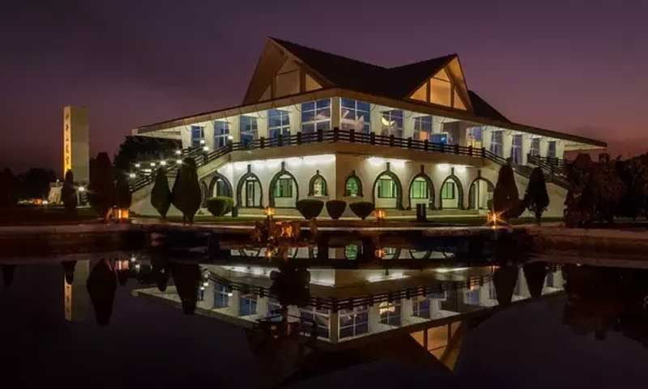
When you are taking road trips around Nagpur, you’ll reach this iconic temple located about 20 kms away from the city. It’s a special temple dedicated to the Buddhist religion but still you’ll find devotees and tourists from all sects paying a visit to this place. The incredible architecture of this temple is the first point of attraction; and secondly, it’s a living proof of the Indo-Japanese friendship in the country which makes its presence exemplary.
Back to top
Heritage of Nagpur
1. Zero Mile Stone

The Zero Mile Stone was built during the Great Trigonometrical Survey of India in 1907 in Nagpur. The project, basically, was to demarcate the British territories in India. This was the project under which our great mountains were also measured. Basically, the entire subcontinent was mapped. And we make use of this knowledge till date
2. Sitabuldi Fort
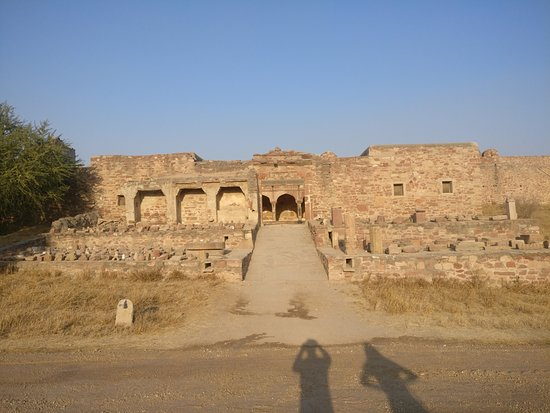
The Sitabuldi fort, which is in the center of the city and perched atop a hill, offers breathtaking views of the surroundings. Due to the Anglo-Maratha wars, the British East India Company engagements, and Mudhoji II Bhonsle, it is one of the most important sights to see in Nagpur. The graves of the wartime martyred troops are still visible.
3. Chitnavis Wada
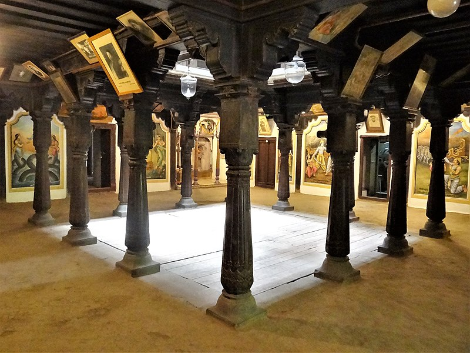
The only surviving wada in a good conserved state. Visiting this place may require a prior permission, which they give easily. Not many Maratha-era wada survive today.
4. Senior Bhonsla Palace
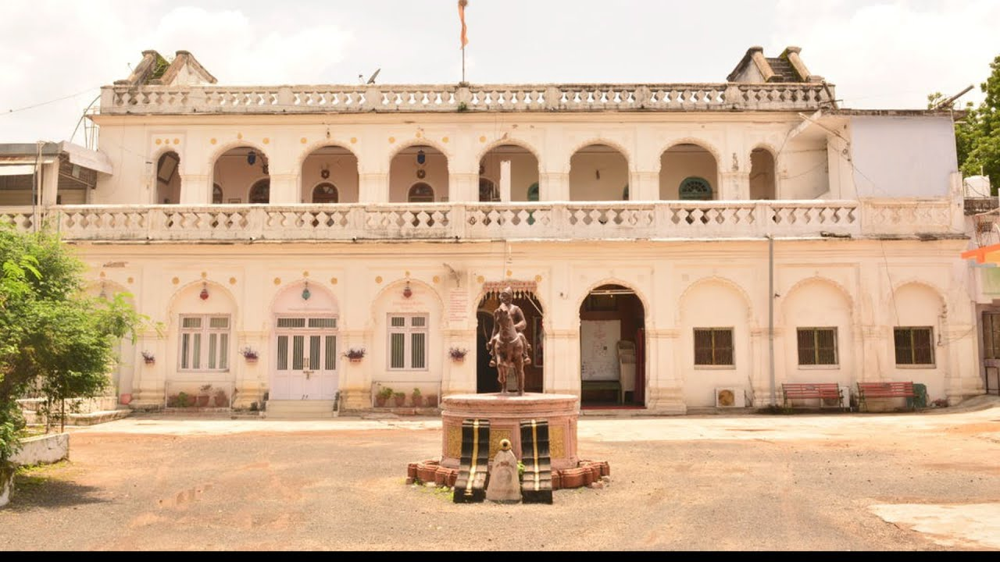
Mahal, once the seat of the Rulers of Nagpur gets its name from the Bhonsle Rajwada that burnt down in 1864. A new palace was then constructed; home to the Nagpur’s royal family till this day.
Back to top
Gardens in Nagpur
1. Japanese Rose Garden in Nagpur
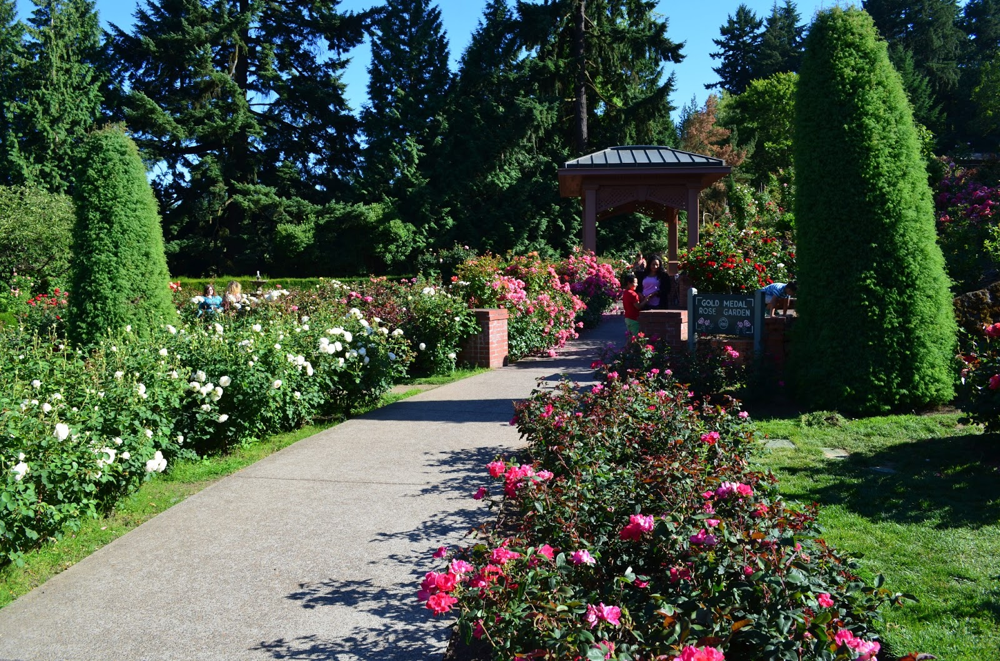
While on a visit to Nagpur, a tourist can check out the Japanese Rose Garden located at Seminary Hills. The freshly blossoming heavenly scent and fragrance of roses is bound to drive a visitor crazy. Be it a jogger, morning walker, a resident or a tourist, meditation and other activities are ideal in this place with lush greenery and sprawling lawns amidst roses. Calmness and serenity creates an amazing aura around the garden premises. The cool breeze, the melodious sound of birds singing reverberates in the garden and the structures in the garden have contributed to the name of Japanese Rose Garden due to its relevance.
2. Children Traffic Park
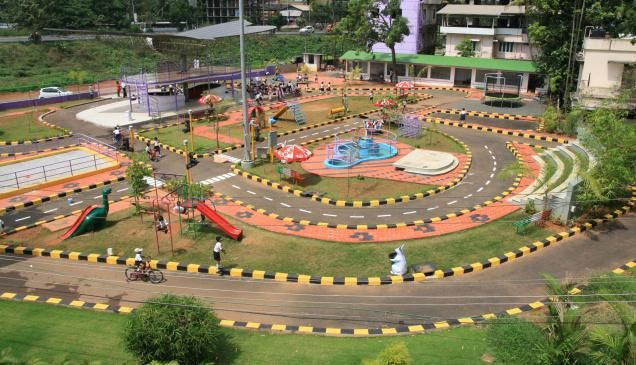
Children Traffic Park is yet another destination kids will love to visit in Nagpur, situated at Dharampeth. With several fun rides and lawns to play with, an additional feature which is upcoming is a 5-D theatre. Kids will surely find it entertaining, they will experience lively events like water, snow, smoke screens. Besides exciting car rides, toy trains coursing through the entire stretch of the park will keep the children very busy with these playful activities. The entry fee is also minimal at Children Traffic Park.
3. Musical Garden
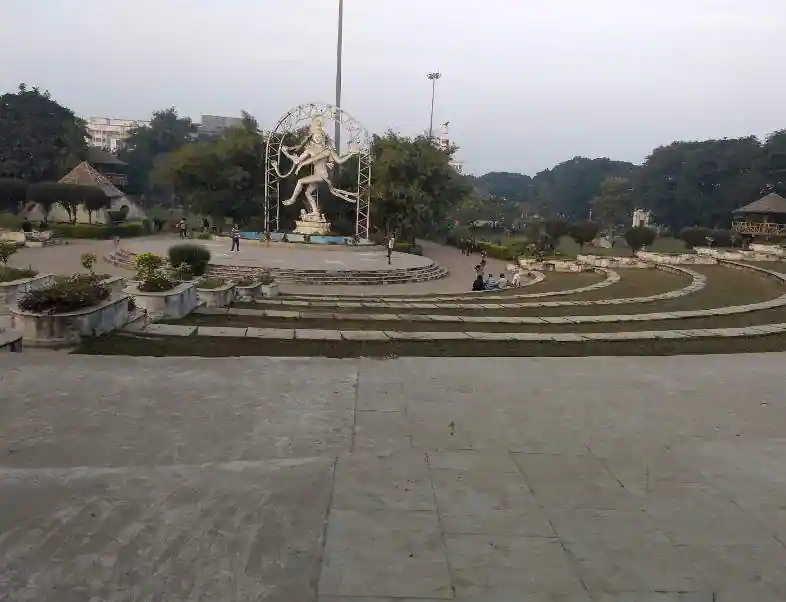
Housed at Surya Nagar, Musical Garden in Nagpur is a delight with melodious songs and music being the theme of the garden with lush scenic landscapes. With several musical fountains spread across the lawns, ragas, raginis and different types of music is belted out by musicians who perform on the garden premises.
4. Maharaj Baug and Zoo
Maharajbagh zoo is the central zoo of Nagpur, India. The zoo is located in the heart of the city and has been built on the garden of the Bhonsle and Maratha rulers of the city. The zoo comes under the Central Zoo Authority (CZA) of India and is maintained by the Panjabrao Deshmukh Krishi Vidyapeeth (PKV) of Nagpur.
Back to top
Back to top
Forests near Nagpur
1. Meghlat Tiger Reserve
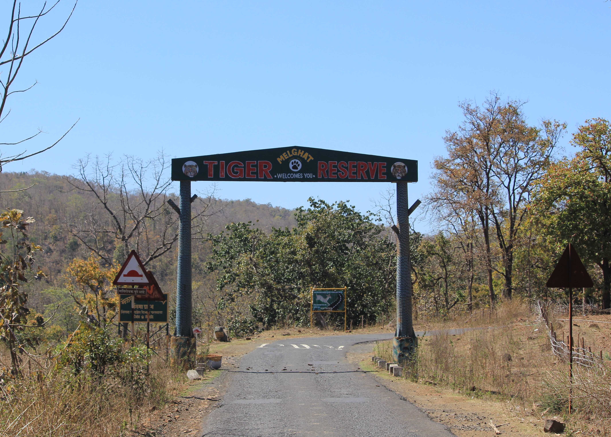
Meghlat tiger reserve is one of the oldest tiger reserves in India. It was founded in 1974 and covers over 3600 square km. As this tiger reserve is located amid the gorgeous Satpura ranges in the Amravati district, the area surrounding the reserve is quite beautiful as well. The lush greenery of the teak forests makes you go back there over and over again. Apart from tigers, some of the wild animals that can be seen out there are wild boar, wild dog, gaur, deer, jackal, Indian wolf, striped hyena and many more.
- The distance of Nagpur from the tiger reserve - 242 kms
2. Navegaon Nagzira Tiger Reserve
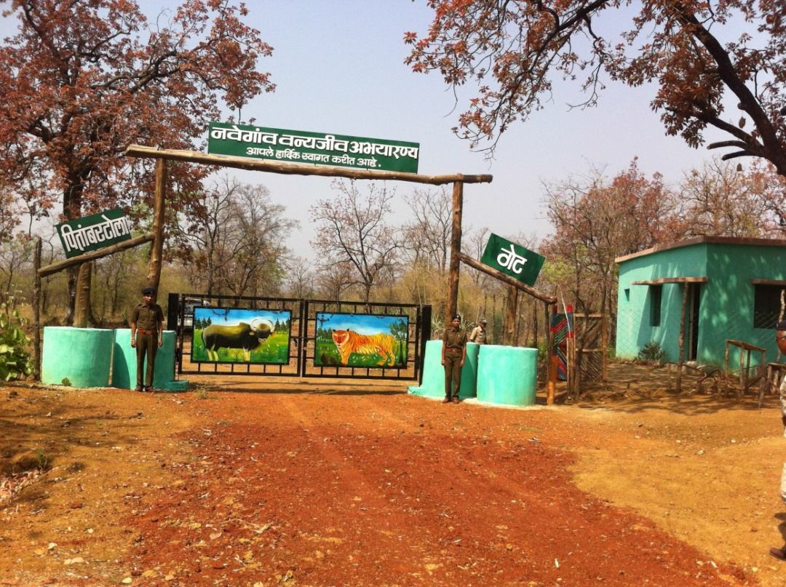
Navegaon Nagzira tiger reserve is located in the Pitezari area that is situated in the eastern part of Maharashtra. The tiger reserve offers an excellent view of the surroundings as it is located right by the Navegaon lake over there. Some of the animals are leopards, spotted deer, sloth bears, tigers and many more. Not only animals, but Navegaon wildlife sanctuary is home to different species of endangered birds as well. The tiger reserve has several gates. If you plan to visit there, do not forget to enquire about the entry points that are opened on the day when you are visiting.
- The distance of Nagpur from the tiger reserve - 121 kms
3. Pench Tiger Reserve

You might be confused by the mention of Pench tiger reserve in this list, but it is actually one of the closest wildlife sanctuaries near Nagpur. Due to the massive area of the sanctuary, it is shared equally by both Madhya Pradesh and Maharashtra. The Pench river even flows through both the states. The natural beauty of the park is quite beautiful as it is situated amid the gorgeous Maikal and Satpura range. You will be spellbound by the lush greenery of the dense forests when you explore it on your Jungle safari. The reserve is located quite close to the Ambakhori waterfalls.
- The distance of Nagpur from the tiger reserve - 67.6 kms
4. Bor Wildlife Sanctuary
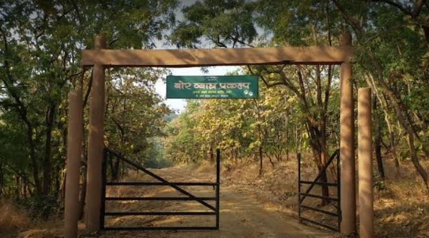
Bor wildlife sanctuary is also a tiger reserve that is not that popular among the tourists in India. It is located quite close to the Bor dam. Other animals apart from Tigers that are commonly viewed out there are Cheetal deer, Nilgai, Gaur and many more. You will be able to view different species of migratory birds out there as well when you explore the park. Usually, tourists prefer to visit the park when they go to the Nagriza or Pench tiger reserve.
- The distance of Nagpur from the tiger reserve - 63.6 kms
5. Tadoba-Andhari Tiger Reserve
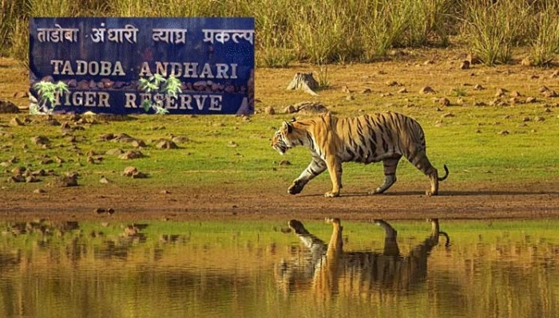
Tadoba Andhari Tiger reserve is one of the few wildlife sanctuaries in India where you do have a chance to see a glimpse of a tiger. There have been many instances that allowed locals and tourists alike to see tigers upfront. As the forest in the sanctuary has tropical deciduous trees, you will be able to witness the spectacular beauty of the greenery of the woods. It is also one of the best places to view endangered birds.
- The distance of Nagpur from the tiger reserve - 145.7 kms
Back to top
Hotels to Stay in Nagpur
1. Tuli Imperial

- Location: Ramdaspeth (7.3 km from Dr. Babasaheb Ambedkar International Airport)
Unlock a world of upscale experiences at this lavish property featuring well-appointed rooms, an incredible restaurant, a swimming pool and a host of top-notch amenities.
Learn more
2. Regenta Central Hotel & Convention Centre
- Location: Nandanvan, Nagpur (11.4 km from Dr. Babasaheb Ambedkar International Airport)
Experience a stay wrapped in luxury and grandeur at the Regental Central Hotel & Convention Centre, set in the commercial city of Nagpur.
Learn more
3. Octave Parkland Suites
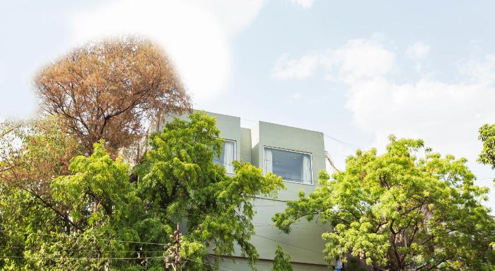
- Location: Ramdaspeth (7.5 km from Dr. Babasaheb Ambedkar International Airport)
Octave Parkland Suites is situated in Nagpur, 2.7 km from Vidarbha Cricket Association Stadium and 800 m from Deekshabhoomi. Among the facilities at this property are a 24-hour front desk and room service, along with free WiFi throughout the property.
Learn more
4. Radisson Blu
- Location: Wardha Road (3.4 km from Dr. Babasaheb Ambedkar International Airport)
This lavish property makes for a comfortable stay option with its contemporary rooms, multiple dining venues, an exclusive spa and easy connectivity to popular areas of the city
Learn more
Back to top
Places of Interest Near Nagpur
1. Pachmarhi
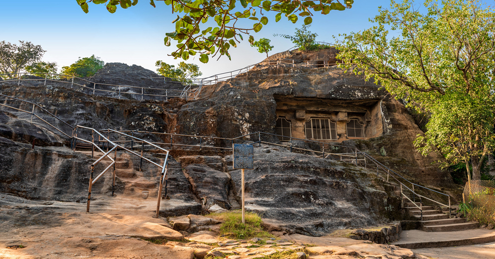
Pachmarhi, also referred to as the queen of Satpura in Hoshangabad district stands tall with all its glory embellished with several waterfalls, caves from the Buddhist era and tons of history tucked within.
The tallest hill station has featured in the list of UNESCO Biosphere reserve for its rich flora and fauna. Locals believe that the 5 Pandavas of Mahabharata had stayed in the caves of Pachmarhi during their exile.
- Distance from Nagpur 227km via Chhindwara road and takes approximately 2 hours to reach.
2. Lonar
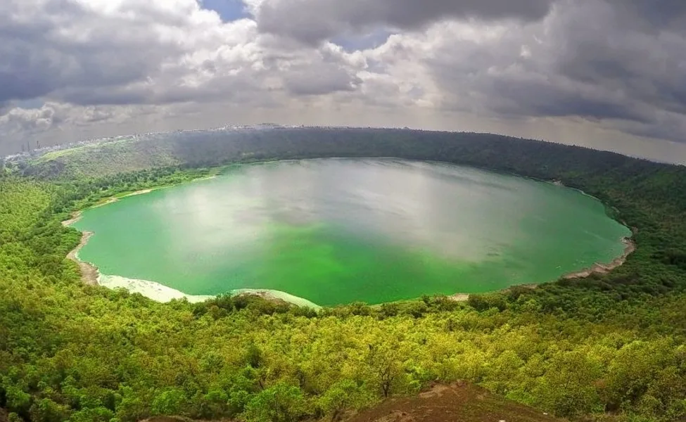
Lonar lake was believed to have been taken shape from a crater formed some 50,000 years ago due to the collision of a meteorite. This mesmerizingly beautiful lake which is 6000 feet wide and 500 feet deep is an important site for scientific research and educational importance.
The only saltwater lake on the basaltic rock in the world looks magnificent, especially during the monsoons surrounded by greenery. Nestled between dainty hills all around, Lonar Lake looks like a priceless green jade with the natural abundance that is unmatched.
- Distance from Nagpur 350km and takes 7 hours to reach.
3. Bhedaghat
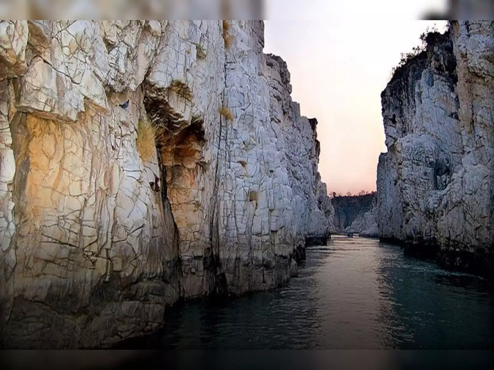
The spellbinding marble rocks alongside the Narmada, creates magic especially on moonlight nights, where the entire area gets dramatic with its natural beauty and flawless setting.
Bhedaghat has stood the testimony of time and archaeologists have found Dinosaur eggs in several ghats of this interesting place. A boat ride on the serene Narmada surrounded by white marble rocks will transport one back to a tranquil space.
The 10th-century temple of goddess Durga at the Chaunsath Yogini Temple adds to the mystic beauty of this place.
- Distance from Nagpur 280 km via NH34 and NH44 and takes a little more than 2.5 hours to reach
4. Ramtek
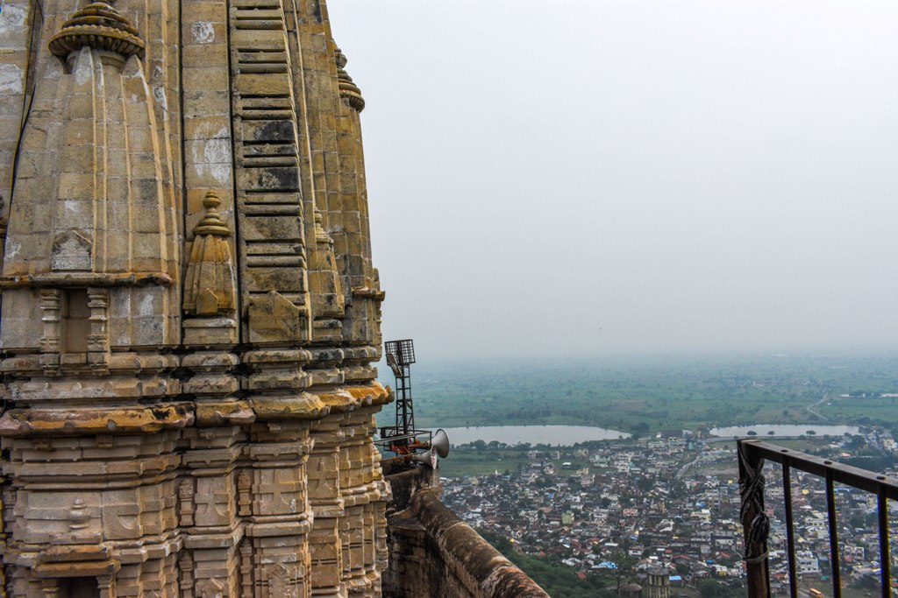
The holy town of Ramtek is believed to be a halting-place of Lord Rams along with Lakshman and Sita from the Ramayana, thus making it a pilgrimage places to visit near Nagpur.
The Vakatakas also happened to reign this place during the 2nd to the 4th century, thus the town is adorned with several edifices and beautiful structure of relevance. Ramtek is thus a destination of choice for both history lovers and pilgrims making it a hotspot during the weekends.
Ramtek is dotted with hillocks, breathtaking lakes and temples done up in Hemadpanthi architecture making it picturesque.
- Distance from Nagpur 56km via NH44 and takes a little above 1hour to reach.
5. Chikhaldara
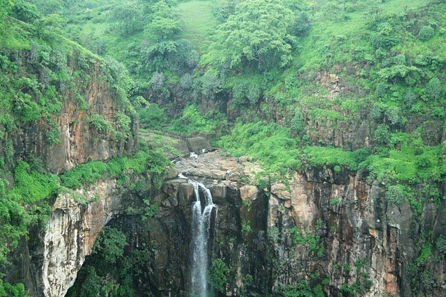
The only coffee growing region in Maharashtra, Chikaldhara boasts of serene lakes, acres of coffee plantation, cascading waterfalls, forts and a rich reservoir of flora and fauna tucked in the dense forests. Chikaldhara is an extremely picturesque location dotted with the gifts of mother nature abundantly.
The place is also of historical relevance tucked into the many bricks of the forts like Narnala, Teliagarh and Zafragarh situated on the hills of Satpura.
- Distance from Nagpur 231km and a drive down the Aurangabad Highway and takes 4.5hours.
Back to top